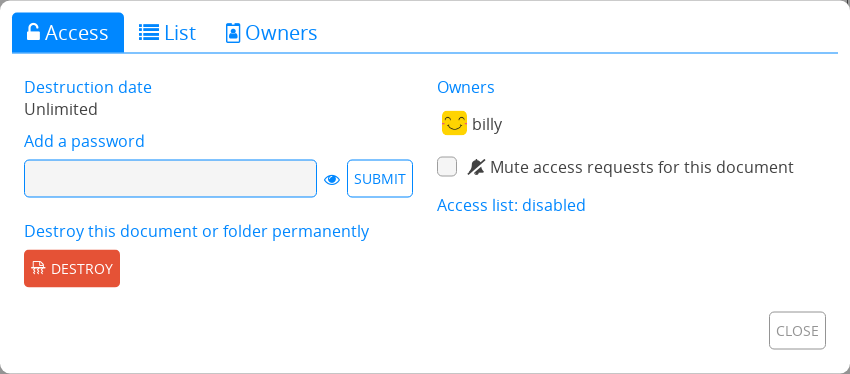

Udostępnianie / Pozwolenia#
Menu Udostępnij i Dostęp pozwalają na zarządzanie tym, w jaki sposób inni użytkownicy mogą wchodzić w interakcje z Twoimi dokumentami w pakiecie CryptPad.
From the document toolbar: Share and Access at the center.
From the CryptDrive:
Right clickon a document > Share or Access.
Udostępnianie#
There are three ways to share a document: Udostępnianie kontaktom, Sharing a link, and Osadzanie. In each case, access rights can be set to authorise the recipient to edit the document, or to only view it.
Poziomy dostępu#
There are 4 levels of permissions:
View: Read-only without editing the document.
Present: Read-only the rendered output of the document, available in the Code / Markdown and Slides applications.
Edit: View and make changes to the document.
View once and self-destruct: Read-only one time. Once the link is opened by a recipient, the document is deleted permanently. Logged in users
Informacja
If a document is already stored in the CryptDrive of a user with edit rights, the “edit link” is shown in the document’s properties even if the user is in View mode.
Udostępnianie kontaktom#
Zalogowani użytkownicy
This is the recommended method for sharing documents securely on CryptPad. When sharing directly with contacts, document links never leave the encrypted platform of CryptPad. This prevents data from being leaked to third parties.

Aby udostępnić jednemu lub więcej kontaktom:
Udostępnij w pasku narzędzi dokumentu > Kontakty.
Right clickon the document in the CryptDrive > Share > Contacts.
Następnie:
Wybierz zezwolenia dostępu.
Wybierz kontakty lub zespoły, którym chcesz udzielić dostępu.
Przycisk Udostępnij.
Informacja
When sharing with contacts, they receive a notification. When sharing with a team, the document is added directly to the team’s CryptDrive.
Osadzanie#
Embedding allows for a CryptPad document to be displayed on a web page.

Aby osadzić dokument:
From the document : Share in the toolbar > Embed.
From the CryptDrive :
Right clickon the document > Share > Embed.
then
Wybierz zezwolenia dostępu.
Copy the embed code.
Paste the code on a web page.
Access#
Zalogowani użytkownicy
This menu is used to restrict access to a document or shared folder:
From the document: Access.
From the CryptDrive:
Right clickon the document or shared folder > Access.
Access tab#

This tab summarises all the modalities of access to the document:
Expiration date: Date at which the document will be deleted. This date is set at the creation of the document and cannot be modified afterwards.
Password: Displays if a password has been set. A new password can be set, or an existing password modified.
Owners: List of all the document’s owners.
- Prośby o zezwolenie edycji:Poproś o zezwolenie edycji: Dla użytkowników z zezwoleniami dostępu tylko do odczytu.Mute access requests for this pad: Hides edit rights requests for this document. Document owners
Access list: Displays the access list and indicates if it is enabled.
Destroy: Delete the document permanently.
Access List#
Document owners

The access list restricts access to a document. Once active, users who are not on the list are not able to access the document, even if they have it stored in their CryptDrive.
To enable the access list, tick Enable access list. The owners of the document are on the list by default and cannot be removed from it.
Aby dodać kontakty lub zespoły do listy:
Wybierz je z listy kontaktów po prawej.
Add them to the list with the button.
To remove a user or team from the list use the button next to their name.
Owners#

This tab is used to manage the ownership of the document. Owners of a document have the following permissions:
Enable an access list.
Enable a password.
Add or remove other owners.
Destroy the document.
The ownership of a document is set when creating it.
Informacja
If a document is created without owners, no one has permissions to manage its ownership. It cannot be permanently destroyed by anyone, but can be removed from the CryptDrive and will be destroyed automatically after 90 days of inactivity.
Document owners
To add users or teams as owners:
Wybierz je z listy kontaktów po prawej.
Add them to the list with the button.
To remove an owner, use the button next to their name.